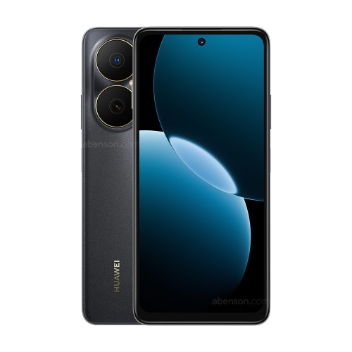
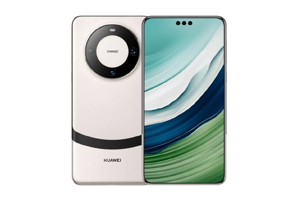
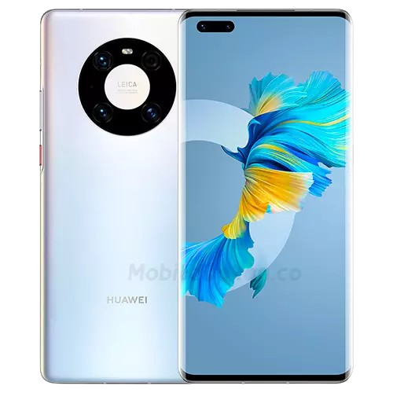
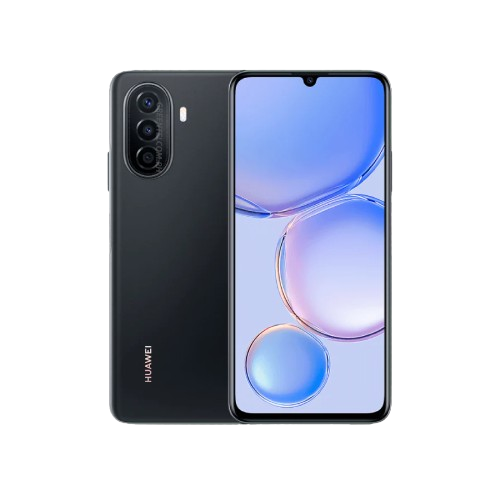
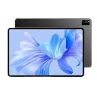
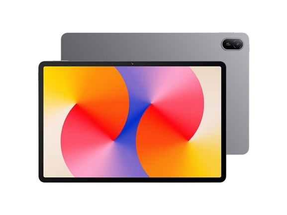

مواصفات:("Huawei Nova Y73")
أداء الشاشة:("6.67 انش, IPS LCD, يدعم +HD, معدل تحديث 90Hz")
أداء المعالج:("Kirin 710A")
الرم:("8 جيجابايت")
حجم التخزين:("128 أو 256 جيجابايت")
أداء الكاميرا:("الخلفية, 50 ميجابكسل" الامامية, 8 ميجابكسل)
أداء البطارية:("6620 مللي أمبير, شحن سريع, 40 واط")
يدعم الجيل:("4G")
يدعم: زر البصمة في زر الطاقة, مقاومة الغبار ورذاذ الماء IP64, NFC, التعرف على الوجه

مواصفات:("Huawei Mate 60 Pro+")
أداء الشاشة:("6.82 انش, LTPO OLED, يدعم +FHD, معدل تحديث 120Hz, محمية بزجاج Kunlun Glass 2")
أداء المعالج:("Kirin 9000S")
الرم:("16 جيجابايت LPDDR5x")
حجم التخزين:("512 جيجابايت أو 1 تيرابايت")
أداء الكاميرا:("الخلفية, 48, 48, 40 ميجابكسل" الامامية, 13 ميجابكسل + مستشعر TOF 3D)
أداء البطارية:("5000 مللي أمبير, شحن سريع 88 واط, شحن لاسلكي 50 واط")
يدعم الجيل:("5G + اتصال عبر الأقمار الصناعية")
يدعم: بصمة مدمجة في الشاشة, مقاومة الماء والغبار IP68 (حتى عمق 6 متر), NFC, التحكم بالأجهزة عبر IR Blaster, ذكاء اصطناعي

مواصفات:("Huawei Mate 40 Pro+")
أداء الشاشة:("6.76 انش, OLED, يدعم +FHD, معدل تحديث 90Hz, تقنية +HDR10")
أداء المعالج:("Kirin 9000 5G, بدقة تصنيع 5 نانومتر")
الرم:("12 جيجابايت")
حجم التخزين:("256 جيجابايت, UFS 3.1")
أداء الكاميرا:("الخلفية, 50, 12, 8, 20 ميجابكسل + عدسة TOF 3D" الامامية, 13 ميجابكسل + مستشعر TOF 3D)
أداء البطارية:("4400 مللي أمبير, شحن سريع 66 واط, شحن لاسلكي 50 واط")
يدعم الجيل:("5G")
يدعم: بصمة مدمجة في الشاشة, مقاومة الماء والغبار IP68, NFC, ذكاء اصطناعي, التحكم بالأجهزة عبر IR Blaster
مواصفات:("Huawei Nova Y91")
أداء الشاشة:("6.95 انش, IPS LCD, يدعم +FHD, معدل تحديث 90Hz")
أداء المعالج:("Snapdragon 680 4G, بدقة تصنيع 6 نانومتر")
الرم:("8 جيجابايت")
حجم التخزين:("128 أو 256 جيجابايت")
أداء الكاميرا:("الخلفية, 50, 2 ميجابكسل" الامامية, 8 ميجابكسل)
أداء البطارية:("7000 مللي أمبير, شحن سريع, 22.5 واط")
يدعم الجيل:("4G")
يدعم: زر البصمة في زر الطاقة, التعرف على الوجه, صوت ستيريو, مقاومة خفيفة للماء والغبار IP64

مواصفات:("Huawei Nova Y71")
أداء الشاشة:("6.75 انش, IPS LCD, يدعم +HD, دقة 720×1600, معدل تحديث قياسي")
أداء المعالج:("Kirin 710A, بدقة تصنيع 14 نانومتر")
الرم:("8 جيجابايت")
حجم التخزين:("128 جيجابايت, يدعم بطاقة MicroSD")
أداء الكاميرا:("الخلفية, 48, 5, 2 ميجابكسل" الامامية, 8 ميجابكسل)
أداء البطارية:("6000 مللي أمبير, شحن سريع, 22.5 واط")
يدعم الجيل:("4G")
يدعم: زر البصمة في زر الطاقة, التعرف على الوجه, وضع حماية العين, الوضع الليلي

مواصفات:("Huawei MatePad Pro 11")
أداء الشاشة:("11.0 انش, OLED, دقة 2.5K (2560×1600), معدل تحديث 120Hz, سطوع حتى 600 شمعة")
أداء المعالج:("Kirin 9000S, ثماني النواة, بدقة تصنيع 7 نانومتر")
الرم:("12 جيجابايت")
حجم التخزين:("256 أو 512 جيجابايت")
أداء الكاميرا:("الخلفية, 13, 8 ميجابكسل" الامامية, غير محددة بدقة رسمية)
أداء البطارية:("8300 مللي أمبير, شحن سريع 66 واط")
يدعم الجيل:("لا يدعم شبكات الاتصال الخلوية")
يدعم: 6 سماعات ستيريو, اتصال عبر الأقمار الصناعية, وضع حماية العين, الوضع الليلي, ذكاء اصطناعي

مواصفات:("Huawei MatePad SE")
أداء الشاشة:("10.4 انش, IPS LCD, دقة 1200×2000, كثافة 224 بكسل/إنش, وضع حماية العين")
أداء المعالج:("Kirin 710A, ثماني النواة, بدقة تصنيع 14 نانومتر")
الرم:("4 أو 6 أو 8 جيجابايت")
حجم التخزين:("64 أو 128 جيجابايت, يدعم بطاقة MicroSD")
أداء الكاميرا:("الخلفية, 5 ميجابكسل, فتحة عدسة f/2.2" الامامية, 2 ميجابكسل, فتحة عدسة f/2.4)
أداء البطارية:("7700 مللي أمبير, شحن سريع 22.5 واط")
يدعم الجيل:("Wi-Fi فقط أو إصدار يدعم 4G حسب النسخة")
يدعم: 4 مكبرات صوت ستيريو, Bluetooth 5.1, USB Type-C, نظام HarmonyOS 2.0, التعرف على الوجه